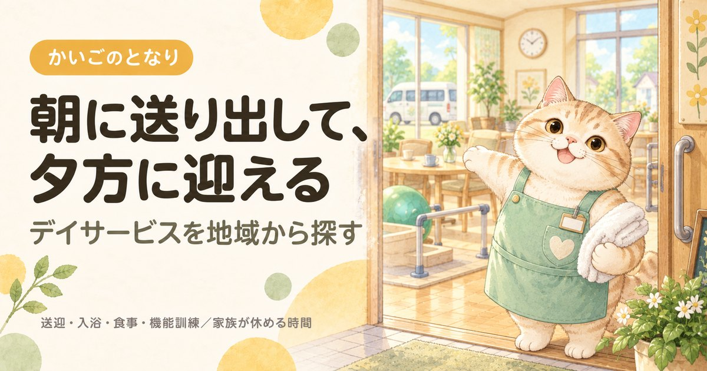

北区のデイサービス一覧｜送迎範囲と費用の見方

東京都北区で通所介護（デイサービス）を探している方へ。東京都の指定を受けた46件から46件を連絡先つきで掲載し、所在町域・運営法人・開設からの年数の内訳と、1級地での自己負担をまとめました。デイサービスでいちばん多い壁は本人が行きたがらないことです。選ぶ順番は近い順ではなく、通い続けられる条件の順になります。
目次
数字で見る北区のデイサービス
- 区内の事業所
- 46件23区中9位（多い順）
- 65歳以上1万人あたり
- 5.5件23区中6位（多い順）
- 高齢化率
- 22.7%23区中3位（高い順）
- 要介護・要支援の認定
- 19,551人65歳以上の23.2%
事業所数は東京都福祉局の指定事業所一覧（2026年9月1日時点）、人口は住民基本台帳（2026年1月1日時点）から計算。区の統計をくわしく見る
北区でデイサービスを探すとき、最初に押さえること
北区には東京都の指定を受けた通所介護事業所が46件あります。数が限られるため、送迎範囲に入るかどうかを先に確認してください。デイサービスで実際にいちばん多い壁は、費用でも空きでもなく本人が行きたがらないことです。だからこそ、選ぶ順番は「近い順」ではなく通い続けられる条件の順になります。
①高齢者あんしんセンターかケアマネジャーに相談してケアプランに位置づける → ②送迎範囲に自宅が入る事業所を絞る → ③見学と体験利用をする → ④週1回から始める。
最初から週3回で組むと、合わなかったときの反発が大きくなります。慣れてから増やすほうが長く続きます。
デイケアとの違い、地域密着型・認知症対応型などの種類、保険内と保険外を分けた費用の見方、本人が嫌がるときの対処はデイサービスを地域から探すにまとめています。北区に限らず共通の内容です。
北区のデイサービス一覧
北区内の通所介護事業所から46件を掲載しています（東京都公表・2026年9月1日時点）。区内には46件が指定を受けており、そのすべてを掲載しています。定員18人以下の地域密着型通所介護は区が指定するため、この一覧には含まれていません。掲載順は事業所の優劣を示すものではありません。
46 / 46件を表示
提供曜日の記載がない1件は、曜日で絞ると表示されません。
8アスケア デイサービスセンター北赤羽
赤羽北2-15赤羽北2丁目団地1-101株式会社ＡＳＣａｒｅ
事業所番号 1371703230
12東京都北区立滝野川西高齢者在宅サービスセンター
滝野川6-21ー25社会福祉法人北区社会福祉事業団
事業所番号 1371703446
13東京都北区立高齢者在宅サービスセンター清水坂あじさい荘
中十条4-16-32社会福祉法人北区社会福祉事業団
事業所番号 1371703453
14東京都北区立高齢者在宅サービスセンター上中里つつじ荘
上中里2-45-2社会福祉法人北区社会福祉事業団
事業所番号 1371703461
24株式会社ケアサービス デイサービスセンターコトニア赤羽
中十条4-17-1株式会社ケアサービス
事業所番号 1371704527
25信和リハビリデイサービス 駒込
西ケ原1-1-11コンフォート駒込101有限会社信和在宅施術サービス
事業所番号 1371704865
31デイサービスセンターなごやか東十条
東十条4-5-4ロワール宮地1Fなごやかケアリンク株式会社
事業所番号 1371706431
32マイプロ板橋駅前
滝野川6-55-1アーバンハウス大坪102一般社団法人日本リハビリ科学研究所
事業所番号 1371706464
38あいのわリハビリステーション豊島
豊島4-18-24ビバホーム北区豊島3階ＭＫＭハートフル株式会社
事業所番号 1371707157
条件に合う事業所はありません。条件を1つ外してみてください。
上記46件は、2026-09-22に北区および各事業者の公表情報で確認した内容です。営業時間・対応エリア・空き状況は変動しますので、連絡の前に必ず公式情報をご確認ください。掲載内容の訂正・削除は、お問い合わせからご依頼いただければ理由の説明なしで削除します。
掲載46事業所の内訳
北区内で掲載している46事業所を、所在地・運営法人・開設からの年数の3つの軸で集計しました。事業所ごとの詳細は上の一覧をご覧ください。
所在町域
デイサービスは送迎があるため、事業所の所在地がそのまま通える範囲ではありません。ただし送迎車の巡回順は距離で決まるので、遠い事業所を選ぶと乗車時間が長くなります。北区内は30の町域に分かれています。最初に乗って最後に降りると、車内だけで1時間ということもあります。
| 町域 | 掲載事業所 |
|---|---|
| 豊島 | リハビリデイＳＫＩＰ、アイリスデイサービス、レッツ倶楽部王子神谷、あいのわリハビリステーション豊島、デイサービス夢楽王子 |
| 中十条 | 東京都北区立高齢者在宅サービスセンター清水坂あじさい荘、株式会社ケアサービス デイサービスセンターコトニア赤羽、ジェクサー・プラチナジム コトニア赤羽、通所介護いちりん |
| 浮間 | 北区立高齢者在宅サービスセンター桐ヶ丘やまぶき荘、デイサービスセンター うきま幸朋苑、デイサービスひまわりⅡ浮間、ツクイ北区浮間 |
| 堀船 | 健遊館 亀の湯、東京都北区立堀船高齢者在宅サービスセンター、コンパスウォーク堀船 |
| 滝野川 | 東京都北区立滝野川西高齢者在宅サービスセンター、マイプロ板橋駅前、グッドデイサービス こうよう |
| 王子 | 高齢者在宅サービスセンター 王子光照苑、アースサポート王子神谷、リハビリストホーム 王子神谷 |
| 西ケ原 | デイサービスセンター あすか、信和リハビリデイサービス 駒込、コンパスウォーク西ヶ原 |
| 東十条 | デイサービス ヨウコー十条、デイサービスセンターなごやか東十条 |
| 王子本町 | 通所介護 コモンズ、デイサービス はるかぜ |
| 神谷 | 神谷デイサービス、京北デイサービスセンター |
| 赤羽北 | アスケア デイサービスセンター北赤羽、赤羽北さくら荘デイサービスセンター |
| その他 | グリーンデイ桐ヶ丘 |
| 上中里 | 東京都北区立高齢者在宅サービスセンター上中里つつじ荘 |
| 上十条 | 宝デイサービス十条 |
| 十条台 | デイサービス ひまわり Ⅰ |
| 岩淵町 | おおるりデイサービスセンター |
| 志茂 | みずべの苑 |
| 昭和町 | サニーガーデン尾久 |
| 田端 | でいほーむ・はくび田端 |
| 田端新町 | 新町光陽苑デイサービスセンター |
| 西が丘 | ウエルガーデン西が丘園 |
| 赤羽 | ベストリハ赤羽 |
| 赤羽台 | ミアヘルサ デイサービス赤羽台 |
| 赤羽西 | 赤羽整形リハビリデイサービス |
運営法人の種別
掲載46件のうち営利法人が30件と最も多くなっています。法人の種別は東京都が公表している区分をそのまま使っています。どちらが良いということはありませんが、母体が施設か住宅街の事業所かで雰囲気と規模が変わります。
| 法人の種別 | 件数 | 傾向 |
|---|---|---|
| 営利法人 | 30件 | 株式会社・有限会社など。住宅街の中の小規模な事業所が多い |
| 社会福祉法人（社協以外） | 12件 | 特別養護老人ホームなどに併設されていることが多く、設備が整っている |
| 医療法人 | 2件 | 病院・診療所が母体。健康面の変化に気づいてもらいやすい |
| その他法人 | 1件 | 上記にあてはまらない法人格 |
| 社団・財団 | 1件 | 公益性の高い運営。地域の事情に通じているところが多い |
定員の規模
掲載46件のうち定員が公表されているのは24件で、いちばん小さい事業所が3人、いちばん大きい事業所が230人です。定員が小さいほど顔ぶれが固定されやすく、人の多い場所が苦手な方に向きます。北区で見学するときは、実際に何人が来ている日かも聞いてください。
| 公表されている定員 | 件数 | 雰囲気の目安 |
|---|---|---|
| 25人以下 | 12件 | 顔ぶれが固定されやすい |
| 26〜40人 | 9件 | 都内でいちばん多い規模 |
| 41人以上 | 3件 | 種類は多いがにぎやか |
介護報酬の「通常規模型」「大規模型」は定員ではなく前年度の平均利用延人員で決まります。料金の区分をこの表から判断しないでください。
営業している曜日
掲載46件のうち、日曜日も対応するところが4件、土曜日まで含めると41件です。残る1件は公表データに記載がありません。介護する家族が働いている場合、北区でもここが合うかどうかで候補が変わります。
| 営業日 | 件数 | こんな方に |
|---|---|---|
| 日曜日も | 4件 | 週末も家族が休めない場合の受け皿 |
| 土曜日まで | 37件 | 日曜だけ別の手段が要る |
| 平日のみ | 4件 | 土日はほかと組み合わせる |
| 記載なし | 1件 | 公表データに記載なし。直接ご確認を |
開設からの年数
掲載46件のうち、指定から20年以上たっている事業所は15件、最も古い事業所は約26年前の指定です。長く続いている事業所は、利用者が定着していて職員の入れ替わりも比較的落ち着いていることが多い一方、その分だけ空きが出にくいという面もあります。新しい事業所は空きがあり、設備も新しいことが利点です。
| 指定を受けた時期 | 件数 | 見るときの目安 |
|---|---|---|
| 直近3年以内 | 2件 | 設備が新しく、空きがあることが多い |
| 3〜10年 | 11件 | 運営が固まってきた時期。空き状況は事業所ごとに差が大きい |
| 10〜20年 | 18件 | 利用者が定着している。空きは出にくい |
| 20年以上 | 15件 | 制度の初期から続いている。地域での評判を聞きやすい |
指定年月日は東京都が公表している指定事業所一覧の値です。事業所の移転や法人変更で指定を取り直している場合があるため、実際の営業年数とは一致しないことがあります。
北区で介護保険を使う場合の自己負担
北区を含む東京23区は介護報酬の地域区分で最も高い1級地にあたり、1単位＝11.40円です。通常規模型で7時間以上8時間未満を利用した場合、北区での1割負担は要介護1で約750円、要介護3で約1,026円、要介護5で約1,309円が目安になります。
見学のときに北区の事業所へ聞くこと
- 送迎範囲に自宅が入るか、乗車時間はどのくらいか同じ北区内でも送迎範囲は事業所ごとに違います。自宅の町名を伝えて、巡回順の何番目になるかまで聞いてください。
- 入浴は個浴か機械浴か「風呂に入れられるのが嫌」で続かない方が多い部分です。個浴を選べる事業所では抵抗感がまったく違います。
- 食事の形態に対応できるか刻み食・とろみ・ミキサー食。飲み込みに不安があるなら必ず確認してください。
- 体験利用ができるか多くの事業所が受け入れています。合わなければ事業所は変えられますし、変更は珍しいことではありません。
- 休業日と延長の可否日曜・祝日・年末年始の対応。仕事を持つご家族には、ここが決め手になることがあります。
よくある質問
北区でデイサービスを使うには、まず何をすればいいですか？
担当のケアマネジャー、いなければ高齢者あんしんセンターに相談してください。デイサービスはケアプランに位置づける必要があるため、北区の事業所に直接申し込むのではなくそこが入口になります。要介護認定を受けていない場合は、認定の申請から始まります。
北区にデイサービスは何件ありますか？
東京都が公表している指定事業所一覧では、2026年9月1日時点で北区内に46件の通所介護事業所が指定を受けています。本ページではそのうち46件を連絡先つきで掲載しています。なお定員18人以下の地域密着型通所介護は区が指定するため、この件数には含まれていません。
北区の掲載事業所は、どこを見て絞り込めばいいですか？
まず送迎範囲に自宅が入るかで絞り、次に入浴設備（個浴か機械浴か）で絞るのが順番です。北区の掲載46件では営利法人が30件と最も多く、指定から20年以上の事業所も15件あります。長く続いているところは空きが出にくい一方、新しいところは空きがあります。
北区で自己負担はいくらくらいですか？
北区は介護報酬の地域区分で1級地（1単位＝11.40円）にあたるため、通常規模型・7時間以上8時間未満なら1割負担で要介護1が約750円、要介護3が約1,026円、要介護5が約1,309円が目安です。ただし北区でもこれに昼食代などの保険外費用が加わるため、事業所から1か月の総額の目安を出してもらってください。
本人が北区のデイサービスに行きたがりません。
まず体験利用を試してください。北区内には46件あり、掲載46件を見ても営利法人が30件と偏りがあるように、規模も雰囲気も事業所ごとに違います。合わない理由別の対処（個浴のある事業所、小規模な事業所など）はデイサービスのしくみのページにまとめました。北区でも週1回から始めて、慣れてから増やすのが定石です。
北区の事業所は、途中で変更できますか？
変更できます。ケアマネジャーに相談すればケアプランを見直したうえで北区内の別の事業所に切り替えられます。北区は区内46件と候補があるので、合わずに変える方は珍しくありません。
北区の高齢化率は22.7%、要介護認定を受けている人は19,551人
北区の人口367,432人のうち、65歳以上は83,542人（22.7%）です。23区の平均20.2%より高い水準にあたります。65歳以上のうち50,857人は75歳以上で、介護が必要になる人が増えはじめる年代です。
| 項目 | 北区 |
|---|---|
| 総人口 | 367,432人 |
| 65歳以上（高齢化率） | 83,542人（22.7%） |
| うち75歳以上 | 50,857人（13.8%） |
| 第1号被保険者（65歳以上） | 84,240人 |
| 要支援1・2の認定 | 6,614人 |
| 要介護1〜5の認定 | 12,937人 |
| 認定率（認定者÷第1号被保険者） | 23.2%（23区平均21.9%） |
北区で要介護・要支援の認定を受けているのは19,551人、区内のデイサービスは46件なので、1事業所あたり425人という計算になります。認定者が全員このサービスを使うわけではないため、混み具合そのものではありません。
認定者数は第1号被保険者（65歳以上）の再掲値で、40〜64歳の方は含みません。出典はページ下部に記載しています。
北区の町域一覧（対応エリアの目安）
北区の町域は30。五十音では6行にわたり、最も多いのはあ行の9件です。掲載事業者の対応範囲は町域単位で分かれているため、問い合わせのときは「北区東十条」のように町名まで伝えてください。
- 赤羽
- 赤羽北
- 赤羽台
- 赤羽西
- 赤羽南
- 岩淵町
- 浮間
- 王子
- 王子本町
- 上十条
- 上中里
- 神谷
- 岸町
- 桐ケ丘
- 栄町
- 志茂
- 昭和町
- 十条台
- 十条仲原
- 滝野川
- 田端
- 田端新町
- 豊島
- 中里
- 中十条
- 西が丘
- 西ケ原
- 東十条
- 東田端
- 堀船
※町域ごとの事業者ページは、掲載できる事業者が3件以上そろった町域から順次公開します。
北区の他のサービスを探す
東京23区からデイサービスを探す
- 東京都福祉局「居宅サービス事業所一覧」（CC BY 4.0）
- 厚生労働省「介護サービス情報公表システム」オープンデータ（2026年6月30日時点／定員・営業曜日・公式サイト）
- 厚生労働省「指定居宅サービス介護給付費単位数の算定構造」通所介護費（令和6年度改定）／介護報酬の地域区分（1級地・1単位11.40円）
- 北区「高齢者あんしんセンター一覧」
- 日本郵便 郵便番号データにもとづく北区の町域一覧
- 東京都総務局統計部「住民基本台帳による東京都の世帯と人口」（令和8年1月1日現在／年齢3区分別人口・5歳階級別人口）
- 東京都福祉局「介護保険事業状況報告（月報）」令和8年6月分（保険者別・第1号被保険者数／要介護認定者数）
最終確認日：2026-09-22／制度・料金は改定される場合があります。ご利用前に各窓口・各事業者で最新情報をご確認ください。